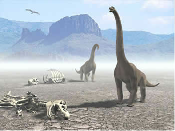
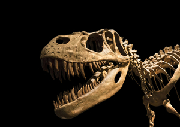
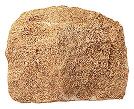

De acordo com os cientistas, nosso planeta deveria ter sido uma enorme massa pastosa incandescente que ao longo do tempo
se resfriou, desprendendo gases e vapores.
Uma parte desses vapores, que deveria ser o vapor d'água, à medida que se afastva da massa incandescente, resfriava-se
e se tranformava em água líquida, caindo em forma de chuva.
Assim, repetindo-se por muitas vezes, a superfície da Terra foi se esfriando lentamente e grandes quantidades de água
foram nela se acumulando.
Ao longo do tempo, ela sofreu muitas outras transformações. Os continentes, os oceanos e até a composição do ar mudaram
para a Terra ser o que é hoje.
Através de pesquisas das rochas e dos fósseis, cientistas estimam que a Terra tenha aproximadamente 4 bilhões
de anos, durante todo esse período ela passou por grandes transformações, processo classificado como eras
geológicas. As diferentes eras geológicas correspondem a grandes intervalos de tempo, divididos em períodos.
A alternância das eras geológicas foi estabelecida através de alterações significativas na crosta terrestre,
sendo, portanto, classificadas em cinco eras geológicas distintas: Arqueozoica, Proterozoica, Paleozoica,
Mesozoica e Cenozoica.
Arqueozoica
A era geológica Arqueozoica é caracterizada pela formação da crosta terrestre, em que surgiram os escudos cristalinos e as rochas magmáticas, nos quais encontramos as mais antigas formações de relevo. Esse período teve início a, aproximadamente, 4 bilhões de anos atrás.
Proterozoica
Estima-se que essa era geológica teve início a cerca de 2,5 bilhões de anos atrás e findou-se há 550 milhões de anos. Durante esse período ocorreu intensa atividade vulcânica, fato que promoveu o deslocamento do magma do interior da Terra para a superfície, originando os grandes depósitos de minerais metálicos, como, por exemplo, ferro, manganês, ouro, etc. Na era geológica do Proterozoico ocorreu grande acúmulo de oxigênio na atmosfera. Também ficou caracterizada pelo surgimento das primeiras formas de vida unicelulares avançadas.
Paleozoica
A era Paleozoica prevaleceu de 550 a 250 milhões de anos atrás. Nesse período a superfície terrestre passou por grandes transformações, entre eles estão o surgimento de conjuntos montanhosos como os Alpes Escandinavos (Europa). Essa era geológica também se caracteriza mpela ocorrência de rochas sedimentares e metamórficas, formação de grandes florestas, glaciações, surgimento dos primeiros insetos e répteis.
Mesozoica
A era Mesozoica iniciou-se a cerca de 250 milhões de anos atrás, ela ficou marcada pelo intenso vulcanismo e consequente derrame de lavas em várias partes do globo. Também ficou caracterizada pelo processo de sedimentação dos fundos marinhos, que originou grande parte das jazidas petrolíferas hoje conhecidas. Outras características dessa era geológica são: divisão do grande continente da Pangeia, surgimento de grandes répteis, como, por exemplo, o dinossauro, surgimento de animais mamíferos, desenvolvimento de flores nas plantas.

Os dinossauros surgiram na era Mesozoica
Cenozoica
Essa era geológica está dividida em dois períodos: Terciário (aproximadamente 60 milhões de anos atrás) e Quaternário (1 milhão de anos atrás).
• Terciário: Caracterizado pelo intenso movimento da crosta terrestre, fato que originou os dobramentos modernos, com as mais altas cadeias montanhosas da Terra, como os Andes (América do Sul), os Alpes (Europa) e o Himalaia (Ásia). Nessa era geológica surgiram aves, várias espécies de mamíferos, além de primatas.
• Quaternário: Era geológica que teve início há cerca de 1 milhão de anos e perdura até os dias atuais. As principais ocorrências nesse período foram: grandes glaciações; atual formação dos continentes e oceanos; surgimento do homem.

Através dos fósseis dos dinossauros, é possível estimar a era geológica que eles surgiram
A estrutura geológica é extremamente importante na formação dos recursos minerais, além de estabelecer uma grande influência na consolidação dos relevos e automaticamente do solo.
Para compreender a estrutura geológica de um lugar é preciso analisar e conhecer os tipos de rochas presentes no local.
Rocha é a união natural de minerais, compostos químicos definidos quanto à sua composição, podem ser encontrados no decorrer de toda a superfície terrestre.
Veja alguns exemplos de minerais: quartzo, grafita, calcita, mica, feldspato, talco, diamante.
Ígneas ou magmáticas
São rochas formadas pelo esfriamento e solidificação de elementos endógenos, no caso, o magma pastoso. São exemplos de rochas magmáticas: granito, basalto, diorito e andesito.
Sedimentares
Esse tipo de rocha tem sua formação a partir do acúmulo de resíduos de outros tipos de rochas. São exemplos de rochas sedimentares: areia, argila, sal-gema e calcário.

Metamórficas
Esse tipo de rocha tem sua origem na transformação de outras rochas, em virtude da pressão e da temperatura. São exemplos de rochas metamórficas: gnaisse (formada a partir do granito), ardósia (originada da argila) e mármore (formação calcária).
As mais antigas rochas são as do tipo ígneas e metamórficas, que surgiram respectivamente na era Pré-Cambriana e Paleozoica. Essas rochas são denominadas de cristalinas, por causa da cristalização dos minerais que as formaram.
Ao contrário das outras, as rochas sedimentares são de formações mais recentes, da era Paleozoica à Cenozoica.
Essas são encontradas em aproximadamente 5% da superfície terrestre.
Dessa forma, os minerais e as rochas compõem uma parcela primordial da litosfera, que corresponde ao conjunto de elementos sólidos que formam os continentes e as ilhas.
A estrutura geológica é a classificação da litosfera terrestre conforme as suas diferentes origens e as composições de suas rochas. Assim, todo o relevo terrestre foi dividido a partir de seus três principais tipos. Observe o mapa abaixo:
Podemos perceber, com a correta leitura do mapa, que existem três tipos principais de estruturas geológicas: os crátons, as bacias sedimentares e os dobramentos modernos (clique nos nomes para conhecer detalhadamente cada uma dessas formas).
Crátons
Os crátons, também conhecidos como escudos cristalinos ou maciços antigos (na verdade, esses nomes representam um de seus subtipos), são formações geológicas consideradas antigas, formadas nas primeiras eras geológicas do planeta, durante a sua formação. São compostos por rochas ígneas, ou magmáticas, e metamórficas, apresentando uma elevada quantidade de grandezas minerais (como o ouro, o ferro, o alumínio e muitos outros). São áreas geologicamente estáveis, ou seja, com poucos terremotos e vulcanismos, costumando dar origens a regiões de planaltos.
Bacias Sedimentares
As bacias sedimentares são composições rochosas formadas a partir de extensas e inúmeras camadas de rochas sedimentares, que surgiram a partir da deposição de sedimentos ao longo das eras. São as mais extensas das estruturas geológicas, recobrindo cerca de 70% do relevo terrestre. São importantes por apresentarem, dependendo das condições locais, uma grande quantidade de fósseis e até petróleo.
Dobramentos Modernos
Por fim, os dobramentos modernos, também chamados de cadeias orogênicas, são formações geológicas consideradas recentes, cujo início ocorreu na era Cenozoica, no período Terciário (há cerca de 250 milhões de anos). São resultantes das ações do tectonismo, geralmente do choque ou conflito entre duas placas tectônicas. Essas formações são originárias das grandes cadeias de montanhas da Terra, como a Cordilheiras dos Andes (América do Sul) e a Cordilheira do Himalaia (Ásia), onde se encontra a montanha mais elevada do planeta, o Everest.
O relevo corresponde às variações que se apresentam sobre a camada superficial da Terra. Assim, podemos notar que o relevo terrestre apresenta diferentes fisionomias, isto é, áreas com diferentes características: algumas mais altas, outras mais baixas, algumas mais acidentadas, outras mais planas, entre outras feições.
Para melhor analisar e compreender a forma com que essas dinâmicas se revelam, foi elaborada uma classificação do relevo terrestre com base em suas características principais, dividindo-o em quatro diferentes formas de relevo: as montanhas, os planaltos, as planícies e as depressões.
Montanhas
As montanhas são formas de relevo que se caracterizam pela elevada altitude em comparação com as demais altitudes da superfície terrestre. Quando tidas em conjunto, elas formam cadeias chamadas de cordilheiras, a exemplo da Cordilheira dos Andes, na América do Sul, e da Cordilheira do Himalaia, na Ásia.
Existem quatro tipos de montanhas: as vulcânicas, que se formam a partir de vulcões; as de erosão, que surgem a partir da erosão do relevo ao seu redor, levando milhões de anos para serem formadas; as falhadas, originadas a partir de falhamentos na crosta, que geram uma ruptura entre dois blocos terrestres, ficando soerguidos um sobre o outro; e as dobradas, que se originam a partir dos dobramentos terrestres causados pelo tectonismo. De todos esses tipos, o último é o mais comum.
Os Alpes, na Europa, formam uma cadeia de montanhas
Planaltos
Os planaltos – também chamados de platôs – são definidos como áreas mais ou menos planas que apresentam médias altitudes, delimitações bem nítidas, geralmente compostas por escarpas, e são cercadas por regiões mais baixas. Neles, predomina o processo de erosão, que fornece sedimentos para outras áreas.
Existem três principais tipos de planaltos: os cristalinos, formados por rochas cristalinas (ígneas intrusivas e metamórficas) e compostos por restos de montanhas que se erodiram com o tempo; os basálticos, formados por rochas ígneas extrusivas (ou vulcânicas) originadas de antigas e extintas atividades vulcânicas; e os sedimentares, formados por rochas sedimentares que antes eram baixas e que sofreram o soerguimento pelos movimentos internos da crosta terrestre.
Imagem do planalto tibetano
Planícies
São áreas planas e com baixas altitudes, normalmente muito próximas ao nível do mar. Encontram-se, em sua maioria, próximas a planaltos, formando alguns vales fluviais ou constituindo áreas litorâneas. Caracterizam-se pelo predomínio do processo de acumulação e sedimentação, uma vez que recebem a maior parte dos sedimentos provenientes do desgaste dos demais tipos de relevo.
O Rio Amazonas é cercado por uma área de planície
Depressão
São áreas rebaixadas que apresentam as menores altitudes da superfície terrestre. Quando uma localidade é mais baixa que o seu entorno, falamos em depressão relativa, e quando ela se encontra abaixo do nível do mar, temos a depressão absoluta. O mar morto, no Oriente Médio, é a maior depressão absoluta do mundo, ou seja, é a área continental que apresenta as menores altitudes, com cerca de 396 metros abaixo do nível do mar.
Mar morto, exemplo de depressão absoluta